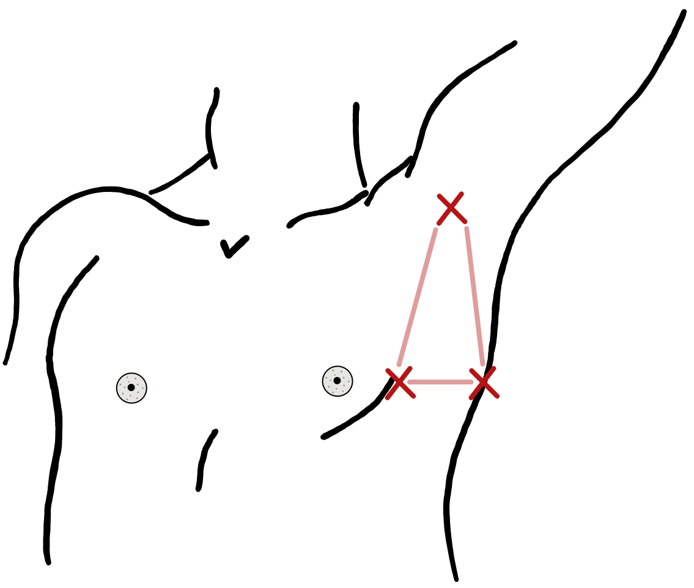
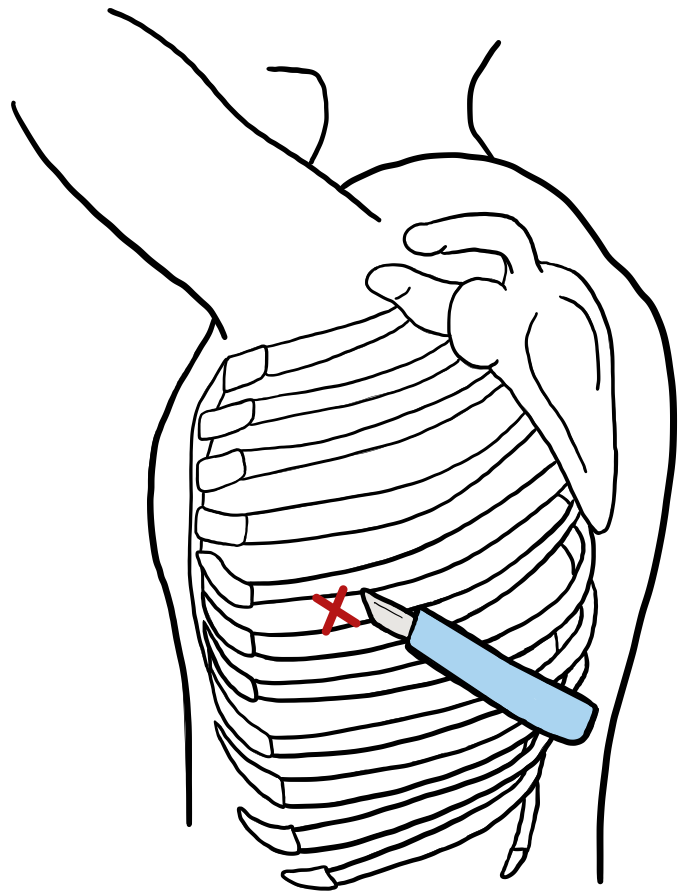
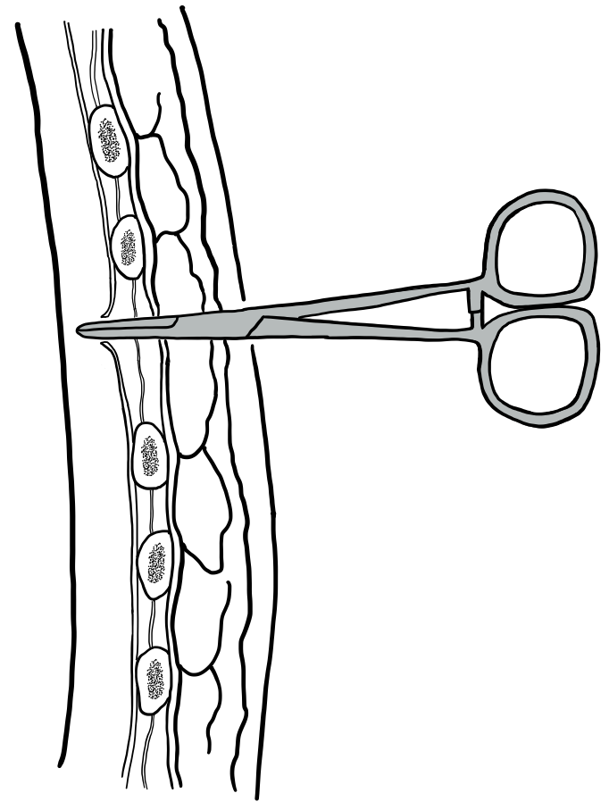
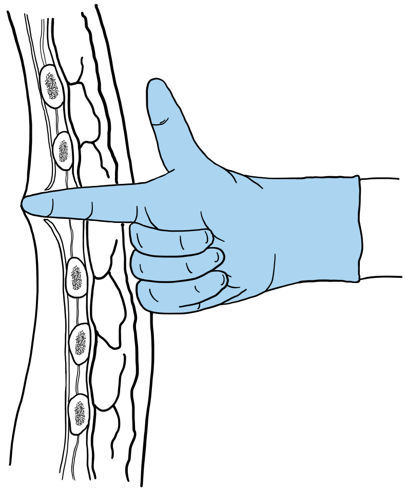
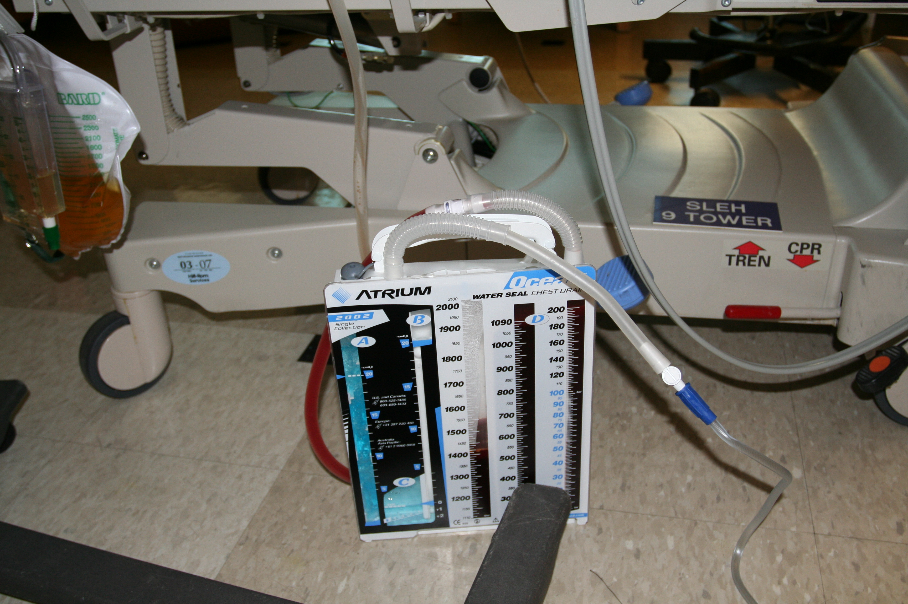

观察线索Observation cues
同时观察呼吸频率与深度、双侧胸廓起伏、反常运动、辅助呼吸肌、说话与咳嗽能力、皮肤颜色和意识变化。Observe rate and depth, bilateral excursion, paradoxical motion, accessory-muscle use, speech and cough, skin color, and mental status together.
床旁事实Bedside facts从受伤机制进入胸廓运动、疼痛限制、肺挫伤、氧合趋势和团队处置，训练医学生识别“正在恶化的呼吸”，而不只记住一个诊断名称。Move from mechanism to chest-wall motion, pain limitation, pulmonary contusion, oxygenation trend, and team management—training learners to recognize deteriorating breathing rather than memorizing a diagnosis label.
预计学习Estimated learning time · 30 分钟min
合成教学病例 · 非真实病历。逐条释放是学习节奏，临床立即威胁需要并行处理；选择题不会改写患者生理或评分系统。Synthetic teaching case, not a patient record. Staged release structures learning; immediate threats need parallel care. Choices do not alter physiology or external scoring.
框架参考公开来源；本课程不是ATLS官方课程，临床内容待教师终审。Framework uses public sources; this is not an official ATLS course. Clinical teacher review remains pending. ATLS 11 · WSES–AAST 2025
用一条临床线路把胸廓运动、呼吸功、氧合、影像和复评连接起来。Use one clinical route to connect chest movement, work of breathing, oxygenation, imaging, and reassessment.
到院：RR26，SpO₂94%（空气） → 30分钟：RR32，SpO₂89%（此版合成氧疗条件：鼻导管4 L/min）。同时看说话、咳嗽、呼吸功和意识。Arrival: RR26, SpO₂94% on room air → +30 min: RR32, SpO₂89% (new synthetic oxygen condition: nasal oxygen 4 L/min). Compare speech, cough, effort and consciousness.
回到病例监护与血气Return to case vitals and blood gas同时观察呼吸频率与深度、双侧胸廓起伏、反常运动、辅助呼吸肌、说话与咳嗽能力、皮肤颜色和意识变化。Observe rate and depth, bilateral excursion, paradoxical motion, accessory-muscle use, speech and cough, skin color, and mental status together.
床旁事实Bedside facts床旁超声、胸片和 CT 各自回答不同问题；影像必须与当前呼吸生理、疼痛和连续复评放在一起讨论。Bedside ultrasound, radiography, and CT answer different questions; imaging belongs beside current physiology, pain, and serial reassessment.
影像—生理整合Imaging–physiology integration先区分“影像学连枷节段”和“临床反常运动”，再解释呼吸为什么会逐渐恶化。Distinguish a radiographic flail segment from clinical paradoxical motion before explaining respiratory deterioration.
常见于直接钝性撞击、胸廓挤压和高能量交通伤。机制还应提示同时寻找肺挫伤、气胸/血胸、肩带和纵隔相关损伤。Typical mechanisms include direct blunt impact, thoracic compression, and high-energy transport injury. The mechanism should also prompt a search for lung contusion, pneumo-/hemothorax, shoulder-girdle, and mediastinal injuries.
临床连枷胸指呼吸时可见反常胸壁运动；CT 显示多根多处骨折属于解剖学连枷节段，两者不能简单画等号。疼痛、体位和肌肉保护可使反常运动不明显。Clinical flail chest is paradoxical motion during breathing. A CT-defined multi-level fracture pattern is an anatomic flail segment; the two are not interchangeable. Pain, position, and muscular splinting can make paradoxical motion subtle.
胸痛、局部压痛、呼吸浅快、深呼吸或咳嗽受限、胸廓起伏不对称、骨擦感或局部不稳定；严重时出现呼吸功增加、低氧、咳嗽无力、分泌物潴留和意识改变。Chest pain, focal tenderness, rapid shallow breathing, impaired deep inspiration or cough, asymmetric excursion, crepitus, or instability; severe cases develop rising effort, hypoxemia, weak cough, secretion retention, and mental-status change.
下面是教学用的示例轨迹，不是诊断阈值。重点是同一患者多指标共同变化，以及“频率下降但更疲劳”并不等于好转。This is an illustrative trajectory, not a diagnostic threshold. Read multiple variables together—and remember that a falling rate with increasing fatigue is not improvement.
独立的四阶段教学轨迹，不是上方38岁病例的连续记录；不与该病例或外部影像拼成同一患者时序。A separate four-stage teaching trajectory, not the 38-year-old case above. Do not combine it or external images into one patient timeline.
局部胸痛和压痛，能完整说话；胸廓幅度稍减，但尚能有效咳嗽。Focal pain and tenderness; full sentences; mildly reduced excursion with effective cough.
医生想：这个“看起来还行”能维持多久？Clinician thought: how durable is this apparently stable state?
呼吸变浅，咳嗽因疼痛减弱，胸廓不对称更明显；分泌物清除能力下降。Breathing becomes shallow, pain weakens cough, asymmetry is clearer, and secretion clearance declines.
医生想：疼痛控制后，深吸气和咳嗽有没有真正改善？Clinician thought: did inspiratory capacity and cough actually improve after analgesia?
辅助呼吸肌参与、氧合下降、说话变短，影像和床旁表现可能逐渐显现肺挫伤或胸膜腔问题。Accessory-muscle use, falling oxygenation, and shorter speech; lung contusion or pleural complications may become more apparent clinically and on imaging.
医生想：是哪一部分在变坏——胸壁、肺、胸膜腔，还是共同作用？Clinician thought: what is worsening—wall, lung, pleural space, or all three?
呼吸频率看似回落，但胸廓幅度、说话、咳嗽和意识均变差，提示疲劳而不是恢复。The rate appears to fall while excursion, speech, cough, and mental status worsen—suggesting fatigue rather than recovery.
医生想：现在是否需要升级呼吸支持与高级监护？Clinician thought: does the patient now need escalation of respiratory support and monitoring?
“与上一次相比，RR／呼吸深度／SpO₂ 与氧需求／胸廓运动／咳嗽与分泌物／疼痛与活动／意识分别如何；哪项行动有效，哪项风险仍未解释？”“Compared with the last check: rate/depth, SpO₂ and oxygen need, chest motion, cough/secretions, pain/activity, and mental status—what improved after intervention, and what risk remains unexplained?”
先判断图上看见了什么，再判断患者是否因它发生生理受损。First describe the image, then assess whether it explains physiologic compromise.

胸片不单独证明张力生理；血流动力学或严重呼吸受损要结合临床。不是本课患者的胸片。The film alone does not establish tension physiology; assess haemodynamics and severe respiratory compromise clinically. It is not the course patient’s film.
User "Clinical Cases" (clinicalcases.org) · CC BY-SA 2.5 · Original source / 原图出处
Left pneumothorax. This X-ray is used on clinicalcases.org to illustrate a fictional case history of tension pneumothorax. Note the large, well-demarcated area devoid of lung markings, the tracheal deviation and movement of the heart away from the affected side. There is also small pleural effusion
Pneumothorax CXR — left pneumothorax used to illustrate tension pneumothorax ·
保留原图；网页仅按比例显示。读图释义由课程另写，不是原作者诊疗结论。Original image retained and displayed proportionally. Teaching interpretation is separate from the original clinical conclusions.

静态 CT 不证明反常呼吸运动，也不单独决定肋骨固定。这是单病例影像。Static CT does not demonstrate paradoxical motion or independently determine fixation. This is a single-case image.
Zachary Taylor, Jeremy Miller, Danielle Z Azani, Brian Patterson, Andrew McCague · CC BY 4.0 · Original source / 原图出处
Axial chest CT on day one showing costochondral separation (blue arrow).
Management of a Flail Chest Caused by Multiple Costosternal Fractures: A Case Report (Cureus 2023) · Figure 1
保留原图；网页仅按比例显示。读图释义由课程另写，不是原作者诊疗结论。Original image retained and displayed proportionally. Teaching interpretation is separate from the original clinical conclusions.
疑似张力性气胸合并血流动力学不稳或严重呼吸受损时，团队不应为等待影像延误紧急处理；不要求所有经典体征齐全。Suspected tension pneumothorax with haemodynamic instability or severe respiratory compromise warrants urgent team action without waiting for imaging or every classic sign.
积血量不是唯一决定因素。把生理变化、通气需求、积血进展和复查能力一起交给专科评估；胸壁固定也需结合稳定性、移位和呼吸负担。Volume alone does not decide management. Integrate physiology, ventilation needs, progression and follow-up capacity with specialist review. Fixation also depends on stability, displacement and respiratory burden.
同时追踪患者氧合和灌注、引流量的逐小时记录、管路状态。病情下降时不等待凑满某个数字阈值。Track oxygenation and perfusion, hourly drainage and tube/system status together. Do not wait for a numerical threshold when physiology declines.
不能。300–500 mL 之间不宜硬套两端阈值，需结合生理、通气、变化和救援条件个体化判断。前两小时合计引流也不能反推每小时流量。No. Do not apply endpoint thresholds mechanically in the 300–500 mL interval; individualise by physiology, ventilation, trajectory and rescue capacity. A two-hour total does not establish each hourly rate.
真实公开图用于观察训练；病例与指南各自标明来源，病例报告不能单独建立普遍治疗规则。临床适用性仍待教师逐项复核。Public images support observation training. Case reports and guidelines are distinguished; a case report alone cannot establish a general treatment rule. Clinical applicability remains pending teacher review.
先判断正在危及生命的机制，再选择处理；每次操作后重新评估患者。Identify the life-threatening mechanism, choose an intervention, then reassess the patient.
成人创伤专业教学 · 侵入操作须由受训、获授权人员执行，学员在监督下模拟练习；本页不替代临床培训与本地规程。Adult professional teaching. Invasive procedures require trained, authorised operators; learners practise in supervised simulation. This page does not replace clinical training or local protocols.
伴严重呼吸受损或循环不稳：立即由获授权团队减压，不等影像。With severe respiratory compromise or instability, authorised teams decompress immediately; imaging must not delay treatment.
复苏、胸腔引流与胸外止血评估并行；持续恶化立即升级，不等凑满引流阈值。Resuscitation, drainage and surgical bleeding review proceed together; deterioration warrants escalation before numerical thresholds.
氧疗、镇痛、呼吸支持与肺卫生按生理需要安排；连枷胸本身不等于必须插管。Tailor oxygen, analgesia, respiratory support and pulmonary care to physiology; flail chest alone does not require intubation.
依据：WSES–AAST 2025 · Pleural injuriesBasis: WSES–AAST 2025 · Pleural injuries ↗
它是切开、钝性分离、手指确认胸膜腔的技术；不是手指“穿刺”，也不是完成闭式引流。It uses incision, blunt dissection and finger confirmation of the pleural space; it is neither a finger puncture nor completed closed drainage.
疑似张力性气胸并严重呼吸受损或循环不稳，由受训获授权人员立即减压，不等影像。创伤性心搏骤停的双侧减压属于独立复苏路径，不推广至所有胸痛、低氧或连枷胸。Suspected tension pneumothorax with severe respiratory or haemodynamic compromise requires immediate decompression by trained, authorised operators without imaging delay. Bilateral decompression in traumatic arrest belongs to a separate resuscitation pathway, not every patient with chest pain, hypoxia or flail chest.
NICE NG39 · 1.3.4–1.3.6 / 1.4.1–1.4.2NICE NG39 · 1.3.4–1.3.6 / 1.4.1–1.4.2 ↗
核对患侧与真实肋间；胸大肌外侧缘、背阔肌前缘及腋窝共同定位。通常第4–5肋间，勿仅用乳头定高度。Confirm side and interspace using pectoralis, latissimus and axillary landmarks; usually the 4th–5th space. Nipple position alone is unreliable.

按已确认位置作足够容纳手指的皮肤切口；通道越过下方肋骨上缘，避开肋下神经血管束。Make an incision permitting finger access at the confirmed site; pass above the lower rib, avoiding the inferior neurovascular bundle.

受控钝性分离软组织并打开壁层胸膜；不要以套管针强行深入，也不要靠一声“突破感”宣布成功。Controlled blunt dissection opens the parietal pleura; do not force a trocar deeply or treat a perceived pop alone as success.

戴手套手指沿既有通道轻柔进入，确认胸膜腔及肺的位置，释放气体；避免强行探扫粘连。Gently follow the established tract with a gloved finger to confirm the pleural cavity and lung position and release air; avoid forcing through adhesions.
公开发表原图 · Megan Worsfold 绘，Mohrsen等2021，附加文件1图1（a–d），CC BY 4.0。图示不是比例精确的定位模板；乳头不能单独定位。Published original artwork by Megan Worsfold, Mohrsen et al. 2021, Additional file 1 Figure 1 (a–d), CC BY 4.0. Schematic, not a scaled localisation template; nipple position alone is insufficient.
减压后及时经造口接胸管及单向阀/水封；不要把开放孔当作长期引流。等待置管时的伤口管理按团队规程，警惕外界吸气和再张力。Follow decompression promptly with a tube and one-way/water-seal system. An open wound is not durable drainage; interim wound care follows team protocol with vigilance for air entrainment and recurrent tension.
按复苏规程维持通道通畅并反复评估；复张、软组织闭合或堵塞可致失败。再次恶化由操作者复核通道、对侧及其他病因，后续安排胸管。Maintain patency under the resuscitation protocol. Re-expansion, soft-tissue closure or obstruction can cause failure; deterioration requires operator review of tract, opposite side and other causes, then ongoing tube drainage as indicated.
该来源为部署环境规程；本站不采用其特殊双侧、针刺失败次数或固定切口尺寸作为所有院内患者的统一规定。This source describes deployed practice; its special bilateral indications, failed-needle counts and incision dimensions are not universal hospital rules.
ETM公开旧版课程资料列出needle/finger/tube thoracostomy，公开教学评论也写到先finger再tube。可确认该教学概念存在；不能据此声称已核验现行付费手册全部内容。Historical public ETM materials list needle/finger/tube thoracostomy and discuss finger followed by tube decompression. This confirms the teaching concept, not a review of the entire current paid manual.
ETM 2017课程资料ETM 2017 course brochure ↗ · ETM公开教学评论（历史资料）ETM public teaching commentary (historical) ↗Original supplementary caption: “Illustration of an open thoracostomy.” Illustration by Megan Worsfold. Authors: Stian Mohrsen, Niall McMahon, Alasdair Corfield, Sinéad McKee.
原论文与许可声明Original article and licence statement ↗ · 原始附加文件1（PPTX）Original Additional file 1 (PPTX) ↗ · CC BY 4.0原PPTX内四张PNG逐张提取，像素未改；以HTML重排并增加双语说明，未沿用原图将通道留开放的泛化表述。2021图例用于展示技术，适用条件依据现行公开规程；本节待临床教师终审。The four embedded PNGs were extracted unchanged, rearranged with bilingual HTML notes; the original general statement about leaving the tract open is qualified here by ventilation status. The 2021 figure illustrates technique; current public protocols define context. Clinical teacher review remains pending.

Johntex · “chest drain - bedside with fluids” · 原文件页Original file ↗ · CC BY 2.5
原图未修改，按比例显示；观察说明为本课程新增。Unmodified original, proportionally displayed; teaching observations added by this course.
Merck Manual · How To Do Tube Thoracostomy
打开原站视频Open original video ↗观看任务：暂停在定位、钝性分离/手指确认、连接与固定三处，指出每一步的安全核查。视频在原站观看，未复制或热链；播放核验状态见本节来源记录。Viewing task: pause at localisation, blunt dissection/finger confirmation and connection/fixation; identify safety checks. Watch on the source site; no copying or hotlinking. Playback verification is recorded below.
明确适应证、患侧、凝血/合并伤、器材与引流系统；非立即危急时完成沟通同意。Confirm indication, side, bleeding risks, equipment and drain system; obtain consent when urgency permits.
在安全三角内确认通常第4–5肋间；体位服从脊柱与生理限制。消毒铺巾，分层局麻，核剂量与回抽。Confirm usually the 4th–5th interspace within the safe triangle; adapt positioning to spinal and physiological constraints. Prepare sterile field, infiltrate local anesthetic, check dose and aspirate.
沿肋骨上缘通道钝性分离进入胸膜腔；避免套管针强行推进。Bluntly dissect above the rib into the pleural cavity; avoid forceful trocar insertion.
手指确认胸膜腔与通道；置管使全部侧孔位于胸膜腔，深度按胸壁与器材确认，不套用固定厘米数。Finger-confirm cavity and tract; insert with all side holes intrapleural. Individualise depth to chest wall and device.
连接水封/单向阀系统，缝合固定、密封敷料、记录皮肤刻度；引流瓶低于胸部，管路不扭折。Connect a water-seal/valve system; suture, dress and record the skin mark. Keep the chamber below the chest with unkinked tubing.
立即比较氧合、呼吸功和灌注；记录漏气、引流量及性质，随后影像核位置与残留，明确观察责任人。Reassess oxygenation, effort and perfusion; record air leak and drainage, then image for position/residual collection and assign monitoring responsibility.
Merck · 逐步操作Merck · procedural steps ↗ · BTS 附录4 · 固定与侧孔图例BTS Appendix 4 · sutures and side holes ↗ · BTS 附录8 · 水封装置图例BTS Appendix 8 · drainage-system figures ↗
以上为钝性分离法，导丝/Seldinger法是另一套技术，不能混合步骤；管径与方案按损伤、生理和设备由团队选择。These steps describe blunt dissection. Seldinger is a separate technique; do not mix the steps. Teams choose tube size and technique according to injury, physiology and equipment.
无摆动可能是肺复张，也可能是扭折、堵塞或脱出；先看患者再查管路。持续漏气时随意夹管可诱发张力性气胸。抽吸不是自动默认设置，应由团队开具方案。Absent swing can reflect re-expansion or obstruction/dislodgement; assess the patient, then the circuit. Clamping an ongoing air leak can cause tension. Suction requires an explicit team plan.
BTS 附录8 · TroubleshootingBTS Appendix 8 · troubleshooting ↗失稳或持续胸内出血须紧急止血评估；残留血胸、持续漏气或疑脏器损伤讨论VATS/开放处理。Instability or ongoing thoracic bleeding requires urgent haemostasis review; retained blood, air leak or suspected organ injury prompts VATS/open assessment.
稳定连枷胸及特定明显移位骨折、通气困难或难治疼痛进入多学科评估。适合手术者通常争取伤后48–72小时；有禁忌时尽早重新评估。Consider multidisciplinary SSRF review for stable flail chest and selected displaced fractures, ventilatory difficulty or refractory pain. Eligible patients generally benefit from a 48–72 h window; reassess promptly when contraindicated.
监测氧需求、血气、疼痛、咳嗽和活动；肺保护、排痰、可行早期活动及出院随访按个体安排。Track oxygen need, gases, pain, cough and mobility; individualise lung protection, secretion clearance, mobilisation and follow-up.
WSES–AAST 2025WSES–AAST 2025 ↗ · WSES/CWIS 2024 · PS1/2/3WSES/CWIS 2024 · PS1/2/3 ↗ · ACS 2025 胸壁指南ACS 2025 chest-wall guideline ↗
48–72小时是适合SSRF者的目标，不是所有胸伤的强制手术时间。初期有禁忌者，WSES建议条件允许后尽早、伤后3–7天内安排；循环不稳先复苏止血。The 48–72 h target applies to eligible SSRF patients, not every chest injury. When initially contraindicated, WSES recommends surgery as soon as feasible within 3–7 days; instability prioritises resuscitation and haemostasis.
胸管低输出不能排除堵塞或胸内持续出血；交接同时报告灌注、逐小时引流与管路状态。Low output does not exclude obstruction or ongoing intrathoracic bleeding. Handover perfusion, hourly output and circuit status together.
核验日期2026-10-04。WSES–AAST 2025用于创伤诊疗；BTS 2023为成人胸膜操作安全补充，不能直接套用非创伤积液的限量引流规则；Merck专业版用于操作学习，不是专科指南。Checked 2026-10-04. WSES–AAST 2025 informs trauma care; BTS 2023 supplements adult procedural safety, not trauma application of non-traumatic effusion drainage limits. Merck is a procedural reference, not a specialty guideline.
本路径为课程教学概括，非官方算法。官方图例/视频仅链接原页；本次核验原页，未确认全片播放。新增内容待临床教师复核。This is an original teaching synthesis, not an official algorithm. Official figures/videos are linked at source; pages checked, full playback not confirmed. New content awaits clinician review.
描述胸廓运动、呼吸功、疼痛限制和皮肤颜色，并与前次状态比较。Describe chest movement, effort, pain limitation, and skin color versus prior.
将可见改变、监护趋势和当前担心组合成一句 B 阶段报告。Combine visible change, monitor trend, and concern into one B-step report.
说明床旁影像和其他资源新增的信息，并保留未解释的呼吸变化。State what bedside imaging and resources add while retaining unexplained breathing change.
团队行动后重新比较 RR、氧合、胸廓运动和资源压力。After team action, recompare rate, oxygenation, chest movement, and resource pressure.
CLAIM-MINI-CHEST-MECHANICS连枷胸的解剖定义、临床反常运动、疼痛—浅呼吸—分泌物潴留路径和最初 72 小时恶化风险，依据 2025 ACS 胸壁损伤最佳实践指南。Anatomic and clinical flail definitions, the pain–shallow breathing–secretion pathway, and early 72-hour deterioration risk are grounded in the 2025 ACS chest-wall guideline.
已核对权威指南Authoritative guideline checkedCLAIM-MINI-CHEST-MANAGEMENT氧合支持、有效镇痛、连续肺功能复评、呼吸支持升级与胸壁稳定术评估，依据 2025 WSES–AAST 胸部创伤指南、2025 ACS 指南及 2024 WSES/CWIS 立场文件；实施仍需本地临床审核。Oxygenation, effective analgesia, serial pulmonary reassessment, support escalation, and stabilization review follow the 2025 WSES–AAST and ACS guidelines plus the 2024 WSES/CWIS position paper; local clinical review remains required.
待本地流程确认Local workflow confirmation pendingCLAIM-MINI-CHEST-CHINA国内框架参考国家卫生健康委《突发事件创伤伤员医疗救治规范（2025年版）》；页面不复制操作细节或药物剂量。The domestic framework references China’s National Health Commission 2025 emergency trauma care standard; the page does not reproduce procedural steps or medication doses.
等待院内专家终审Institutional expert sign-off pending